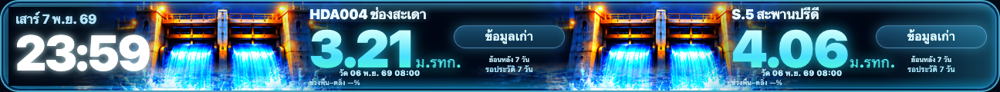

UTH LED · OWNER FEEDBACK ROUND · 7 NOV 2026
ตัวอย่าง Water Clock + PM2.5 ป้ายใหญ่ขึ้น
นี่คือภาพจากโค้ดที่แก้จริงบน candidate branch ของ webapp-widget ที่ขนาด 432×40 พิกเซล โดย Weather คงรูปแบบที่ได้รับการยืนยันแล้ว
SIMULATED QA — ไม่ใช่ค่าฝุ่นหรือระดับน้ำที่ตรวจวัดจริง
ทุกภาพเป็น Browser Screenshot จาก renderer ของ Production แต่ใส่ข้อมูลจำลองที่ควบคุมได้ เพื่อทดสอบตำแหน่งและข้อความเท่านั้น ยังไม่ Deploy Production และยังไม่ผ่านการตรวจดูบนจอ LED จริง
1. PM2.5 · เลือกระดับสีเพื่อดูป้ายและคำแนะนำ
ขยับก้อน PM2.5 / ตัวเลข / หน่วยไปซ้าย 2 px, ขยับแถบสีและกราฟให้ชิดขึ้น, ขยายป้ายสถานะ และใช้ไอคอน SVG ลายเส้นสีขาวสำหรับคำสั้น

SIMULATED · สีเขียว / ดี · ภาพทดสอบ ไม่ใช่ค่าฝุ่นปัจจุบัน
2. Water Level · นาฬิกาไม่ถูกตัดขอบอีก
ตัวเลขเวลา 23:59 แสดงครบด้านขวาสุดของนาฬิกาและลอยเหนือ Layer ตกแต่ง โดยไม่เปลี่ยนตำแหน่งสองสถานี

SIMULATED · ค่าระดับน้ำ 3.21 และ 4.06 ใช้ทดสอบ layout เท่านั้น — ป้าย “ข้อมูลเก่า” ต้องไม่ถูกแสดงเป็น LIVE
3. Weather · รูปแบบเดิมที่คุณยืนยันว่า OK
คง Weather layout, ข้อความ Feels Like และ Heat Warning ตำแหน่งเดิม ไม่มีการออกแบบหน้าตาใหม่ในรอบนี้